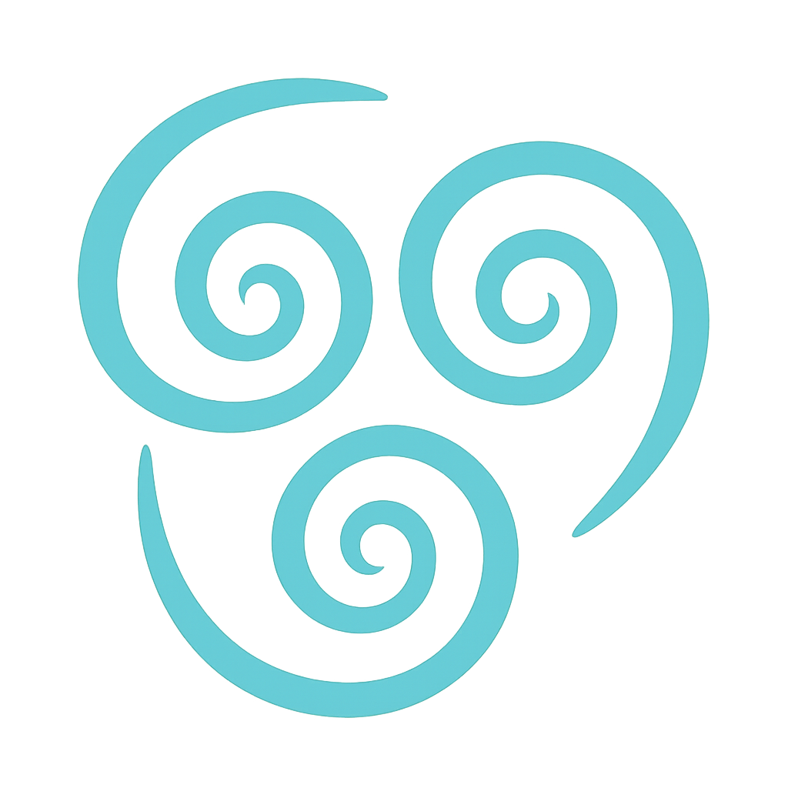
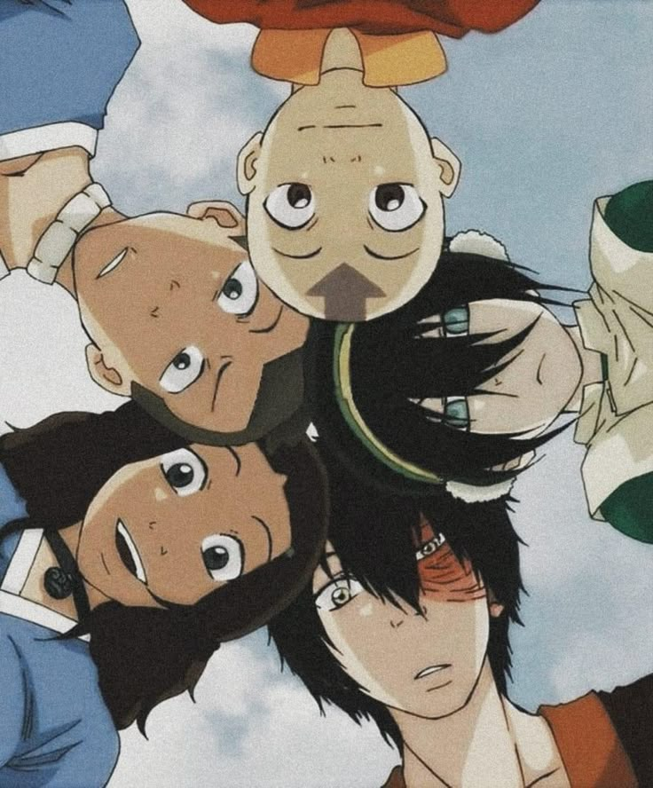
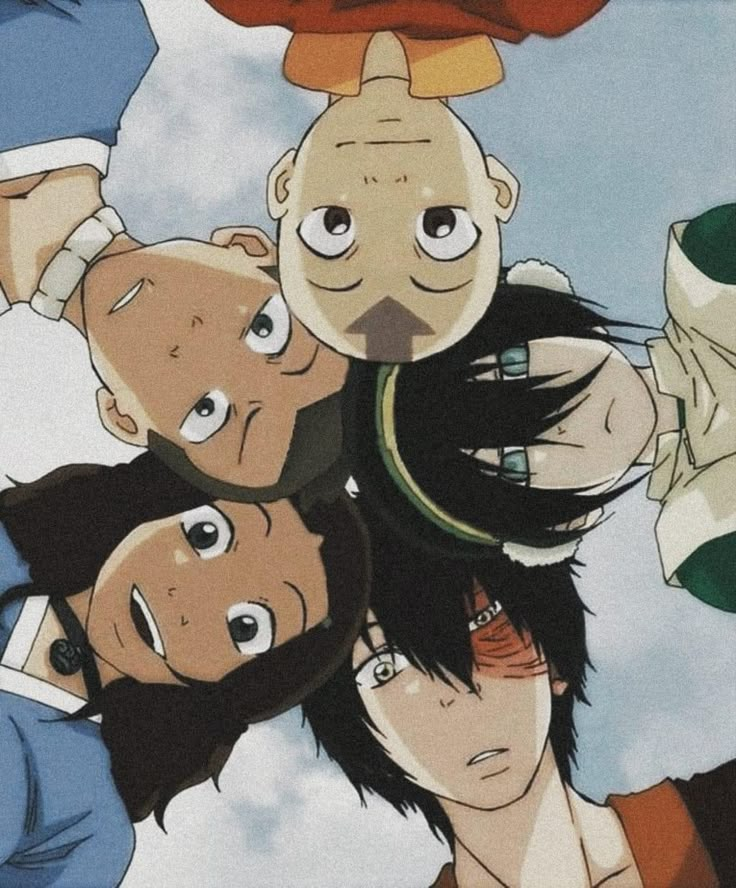

About the Avatar
Hi there! I'm Aang — an Airbender, a vegetarian, and... well, the Avatar.
I was born in the Southern Air Temple, raised by monks, and trained in the ancient ways of Air Nomads.
I may look like a 66-year-old airbender enjoying retirement, but don't let that fool you — I'm actually 166 years old
Long story short - I got frozen in a giant iceberg for about a hundred years. It happens.
When I woke up, the world had changed — the Fire Nation had started a war, and my people, the Air Nomads, were gone.
To this day, I'm the last Airbender.
As the Avatar, I have the unique ability to bend all four elements: air, water , earth
, earth , and fire.
, and fire.
My job is to maintain balance in the world — between people, nations, and nature itself.
It's not always easy... but I believe peace is always possible. Violence isn't the answer.
But being the Avatar isn't just about bending elements.
I'm also the bridge between the physical world and the Spirit World.
I carry the wisdom and experiences of all my past lives — Avatars who came before me, like Avatar Roku and Avatar Kyoshi.
When I enter the Avatar State, I can channel their power and knowledge, and sometimes even speak with the dead.
It's a heavy burden... but also a great honor.
I travel with my loyal flying bison, Appa, and my curious little lemur, Momo.
They're more than pets — they're my family.
- eating (a lot)
- meditating
- exploring ancient ruins
- meeting new friends
- occasionally playing a mean game of airball.
Here are some of the most important figures in my life:
- Katara - a compassionate and powerful waterbender. She's the one who found me frozen in the iceberg and brought me back to the world.
She's also one of the greatest healers and bloodbenders alive — and more than just a friend. - Sokka - her brother, a brilliant strategist, swordmaster, and boomerang expert. He proved that you don't need bending to change the world.
- Toph - the toughest earthbender you'll ever meet, and she's blind. No big deal.
- Zuko - once my enemy, now one of my closest allies. To bring peace, you also have to learn how to forgive.
- Avatar Roku - my previous incarnation. He taught me a lot... and gave me headaches.
- Guru Pathik - the one who helped me open my chakras (well... almost all of them).
- Monk Gyatso - my mentor, my teacher, and like a father to me.
Eventually, things did calm down. The war ended, the nations began to heal, and I even started a family.
My son, Tenzin, went on to become a great airbending master.
If you want to know more about what happened next... you'll have to visit the Legend of Korra section of the Spirit Library.


 
